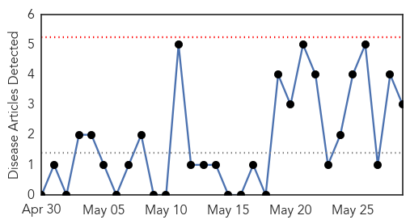

West Nile Virus
30-Day Web Trend
0 alerts, 0 warnings

30-Day Twitter Trend
0 alerts, 0 warnings

Article Locations

Article Confidences

Top Articles:
Top Tweets:
-
No tweets found for May 29, 2015
Dengue Fever
30-Day Web Trend
1 alerts, 0 warnings

30-Day Twitter Trend
1 alerts, 0 warnings

Article Locations

Article Confidences

Top Articles:
- 0.995
- Caribbean health authorities sound alert about Zika virus
- 0.995
- Caribbean Health Authorities Sound Alert about Zika Virus
- 0.994
- Caribbean health authorities sound alert about Zika virus
- 0.920
- Some 8.6 million people in urgent need of medical help in Yemen, says UN agency
- 0.919
- Ministry of Public Health CPS adds Hand-held Foggers to Mosquito Fighting Arsenal
Top Tweets:
-
No tweets found for May 29, 2015